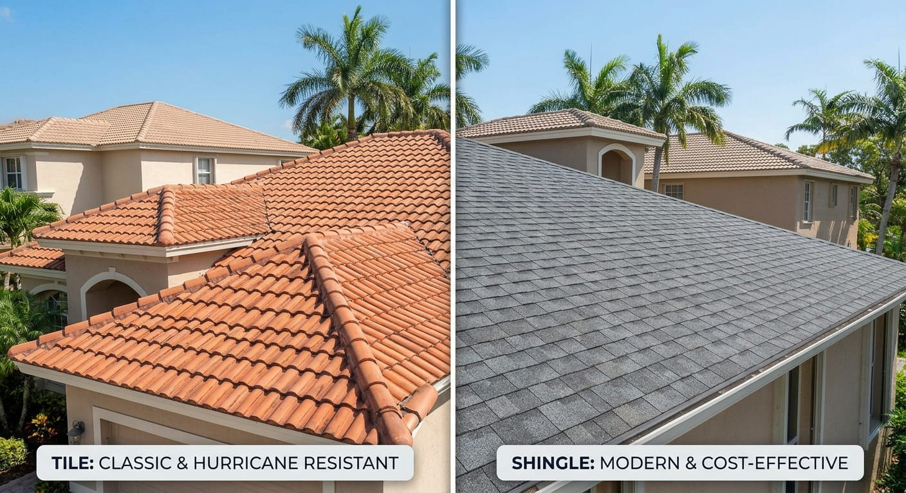

Tile vs. Shingle Roofing in Miami: How to Choose
Tile and asphalt shingle roofs are both common choices for residential properties, but choosing between them is not simply a matter of appearance. The better decision depends on the home's structure, roof design, climate exposure, installation requirements, maintenance expectations and long-term budget.
Miami's heat, rain, humidity and hurricane exposure also make installation quality and wind performance important parts of the comparison.
How tile roofing fits Miami homes
Tile can create a distinctive architectural appearance and is used on many Florida homes. Concrete and clay tiles have different characteristics, and the complete roofing assembly matters as much as the visible tile.
Tile systems also require appropriate underlayment, fastening and installation details. The weight of a tile system is another consideration when changing from one roofing material to another, because the existing structure needs to be suitable for the proposed assembly.
How shingle roofing compares
Asphalt shingles are widely used and can provide a practical option for many residential roofs. They are generally easier to handle than tile, but product selection and installation still matter, particularly in a high-wind environment.
Homeowners should look beyond the shingle color and ask about the product's wind rating, installation requirements and compatibility with the property's applicable building requirements.
Miami weather should influence the decision
Neither material should be selected solely because it is marketed as “hurricane proof.” Florida's Hurricane Retrofit Guide explains that the roof is a system consisting of the covering, underlayment, sheathing, framing and connections. The performance of the complete assembly matters.
Review the official Florida roof guidance before making a major roofing decision.
Maintenance and repairs
Every roofing material requires maintenance. Tile can crack or become displaced, while shingles can experience granule loss, wind damage or other deterioration. Flashing, drainage and penetrations can create problems regardless of the material on the main roof surface.
The practical question is whether a roofing problem is isolated or part of a broader system issue. Our Miami roof inspection guide explains how an inspection can help make that distinction.
Cost should be evaluated over the whole project
The cheapest material is not automatically the lowest-cost roof over its useful life, and the most expensive material is not automatically the best choice. Compare material cost, installation, removal, supporting components, maintenance and the expected needs of the property.
For a broader look at project pricing, read our Miami roof replacement cost guide.
Can you switch from shingles to tile?
Possibly, but it should not be treated as a simple covering swap. Tile is heavier than many shingle assemblies, and the existing structure may need to be evaluated before a material change. The proposed system also needs to satisfy applicable product and installation requirements.
Ask the contractor to explain the structural and permitting implications before committing to a different roof type.
Miami-Dade requirements and product approvals
Local requirements can affect which roofing products and installation methods are appropriate. Miami-Dade County provides roofing permit information and Product Control resources for projects in the county.
Homeowners can review Miami-Dade roofing permit information and Miami-Dade Product Control.
Which roof is right for you?
Start with the property rather than the material. Consider the roof design, structural suitability, weather exposure, appearance, maintenance expectations and total project scope. Then compare specific products and installation systems rather than choosing between broad categories.
If your existing roof is already failing, first determine whether repair or replacement is appropriate through an inspection. Our guide on when you may need a new roof can help.
Frequently asked questions
Is tile better than shingles in Miami?
Neither is universally better. The right choice depends on the property, system design, installation and homeowner priorities.
Are tile roofs hurricane proof?
No. No roof is completely hurricane proof. Wind performance depends on the complete roof assembly and installation.
Can I install tile over my existing shingle roof?
Do not assume that is appropriate. The structure, existing roof and proposed assembly need professional evaluation.
Sources and further reading
- Florida Hurricane Retrofit Guide — Roofs
- Miami-Dade County — Roofing Permits
- Miami-Dade County — Product Control
Related Miami roofing guides
Roof replacement · Roof repair · Replacement cost · More roofing advice